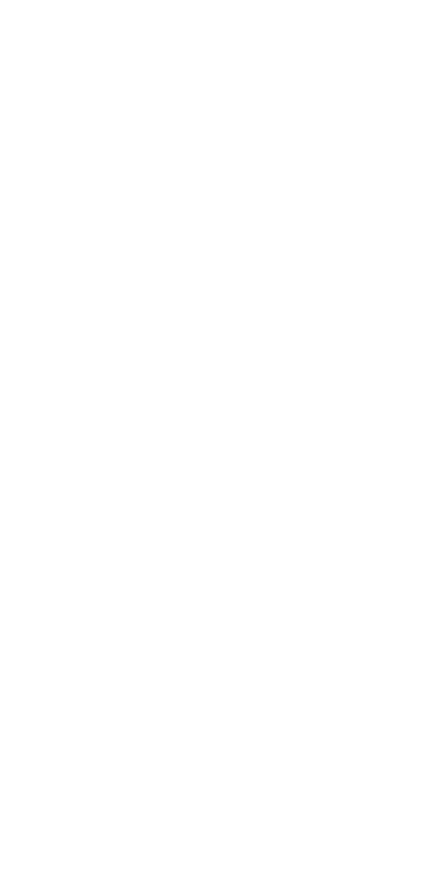

Product design for a privacy-first VPN: a mobile app, a browser widget, a desktop client and a marketing site — one design system, one mental model, one tap between exposed and protected.


VPNs have a UX problem: the products that take privacy seriously look like network engineering tools, and the ones that look friendly get distrusted. H-VPN's bet was that trust is a design outcome — if a person can see their protection state instantly and change it with one tap, they'll believe the product. And because people browse on phones, laptops and inside browsers, the same mental model had to survive on four different surfaces.
I benchmarked NordVPN, ExpressVPN, ProtonVPN and TunnelBear before drawing anything. The pattern across all of them:
Server lists as spreadsheets, settings full of protocol jargon, connection state buried in a tiny icon, and free tiers so limited they feel like tricks. Power features designed as if everyone is a network admin.
Nord's map-driven sense of place, TunnelBear's friendliness, Proton's honest free tier — combined into one screen where the state is the interface: color, IP readout and the power button tell the whole story.
Every VPN screen answers one question — am I exposed? H-VPN makes the answer unmissable. The entire home screen changes temperature: red when your real IP is visible, green when you're masked. Your real IP and the VPN IP sit side by side, so protection isn't a claim — it's a visible before/after. One power tap flips the world.
The connect timer proves the tunnel is alive. The dotted globe anchors "where in the world" without a heavy map. The location picker is a bottom sheet — country, flag, location count — not a spreadsheet. And the free tier is honest: locked locations are visible with a clear path to Pro, never hidden.
Home, locations, free-tier prompts, profile — every screen keeps the same anatomy: status at the top, globe in the middle, location and navigation at the thumb line.


The same product lives as a browser widget (the fastest path — protection without leaving the tab), a desktop client with account, subscription and download management, and the mobile app. Same states, same colors, same button — different ergonomics per surface.


"Your Virtual Guardian in the Cyber Jungle." The marketing site sells the same story the product tells: benefits up front, honest plan comparison, platform downloads and setup guides.

scroll
Near-black violet space, one electric accent, and three semantic colors that never lie: green means protected, red means exposed, yellow means Pro. The dotted globe is the brand's signature — security with a sense of place, not a padlock cliché.
The auth and payment flows (sign-in, sign-up, reset, card, PayPal) ate more of the three months than the hero screens did — next time I'd systematize those first, because every surface needed its own variant. And I'd usability-test the widget earlier: it's the surface people actually live in, but it was designed last.
Have a project in mind? I'd love to hear about it.